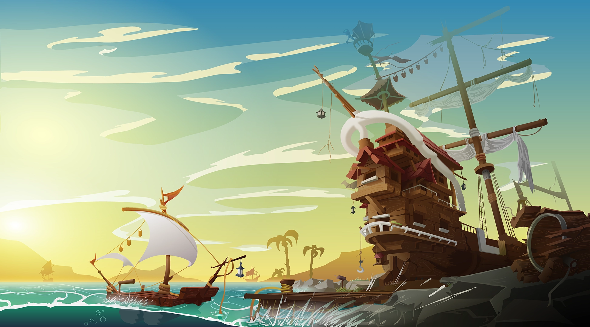
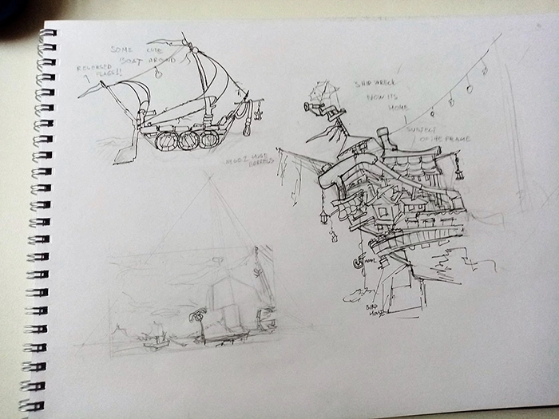
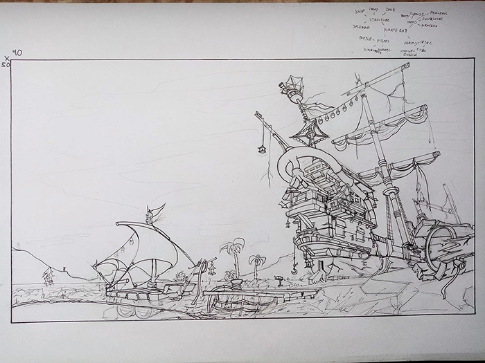
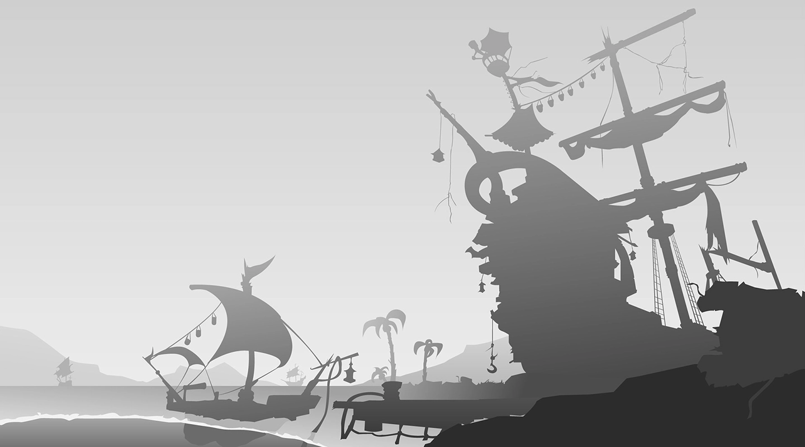
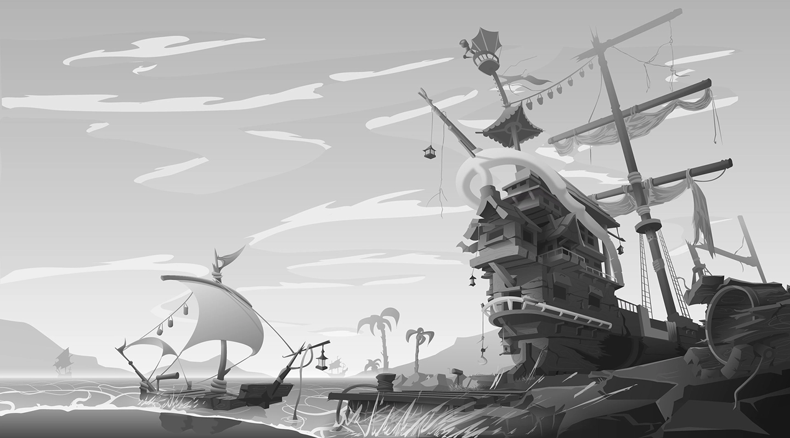

My goal was to communicate an emotion over the illustration also made something that can be used as a movie background. The place in this work is where a retired pirate lives a new, peaceful life.
Illustrator, digital illustration, January 2020



